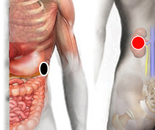

Hiperuricemia
Pares
cola de páncreas - riñón (I)
cóccix- plexo cervical
cóccix - cóccix

Generalidades:
La hiperuricemia es exceso de ácido úrico en la sangre. El ácido úrico es producto del metabolismo de compuestos llamados purinas, que específicamente son los nucleótidos: adenosina, guanosina y ácidos nucléicos. Los niveles elevados pueden deberse a su producción por las células en diversos tejidos del cuerpo, principalmente el hígado, músculos e intestino (endógeno); o también puede haber sido ingerido (exógeno). Dos terceras partes del ácido úrico son filtradas por los riñones y excretadas por medio de la orina; el tercio restante pasa por los intestinos para ser eliminado. Cuando el excedente no puede ser eliminado provoca diversos trastornos: forma cristales de urato monosódico que se acumulan en las articulaciones, lo que se conoce como Artritis gotosa o Gota cuando el par se asocia con la Hepatitis B, también puede formar piedras, o cálculos en los riñones. Otros síntomas pueden incluir debilidad, confusión mental, dolor al orinar, palpitaciones, nausea, diarrea.
Pares relacionados: